Psychology¶
intro¶
- social media to emotions
- 社會比較 → 負面情緒
- 滑一滑看到別人很勝利
- 社會支持 → 正面情緒
- 跟好友聊天、互動
- 社會比較 → 負面情緒
- 教授不認真教課原因
- 認真寫 paper 報酬較高
- 經費
- 聲望
- 認真教課沒什麼報酬
- 很多人選課
- 認真寫 paper 報酬較高
- 心理學史
- 注重內在
- 結構論
- 內省觀察自己心智
- 心理動力論
- 檢討潛意識
- 結構論
- 注重外在
- 功能論反結構論
- 觀察行為，推論心智
- 行為論反結構論
- 只需在意行為，不需在意心智
- 功能論反結構論
- 注重內在
- 認知論反行為論
- 行為背後有心智歷程
- 人本論反行為/心動論
- 人類特有自由意志&正向價值(?)
- 認知論反行為論
- 注重內在
- 信度 & 效度
- 信度 reliability
- 能不能被 reproduce
- consistency
- 效度 validity
- 弄出來的東西有沒有用
- 信度 reliability
- personality test
- 受試者知道在問什麼 → 有亂寫的誘因
- alternatives
- 玩遊戲
- me: 但快思慢想表示看那一兩次的結果，根本完全無法解釋日後的行為 (因為小樣本)
- social media interactions
- 玩遊戲
- 相關法 vs. 實驗法
- 相關法
- passively 找相關
- 實驗法
- actively 操作 variables
- 相關法
生理心理學¶
- 神經傳導素 neurotransmitter
- ==考==
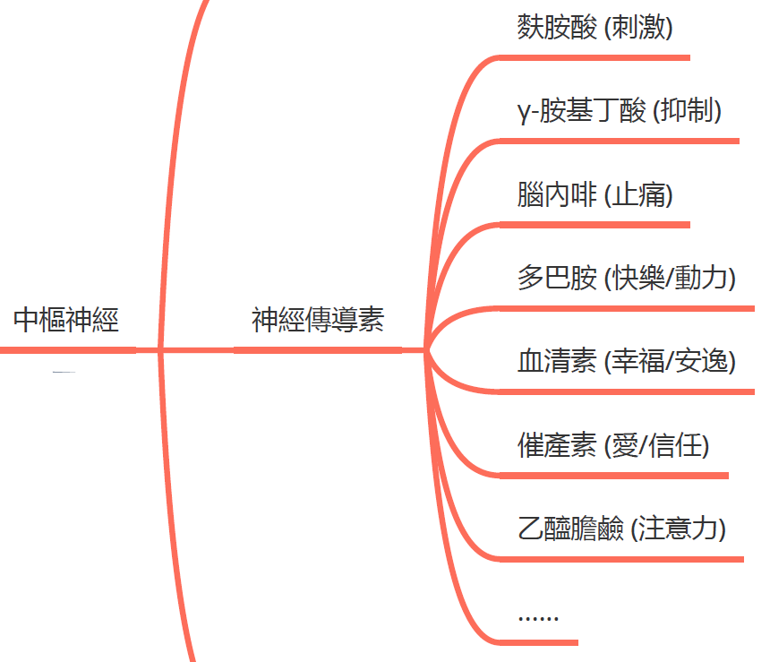
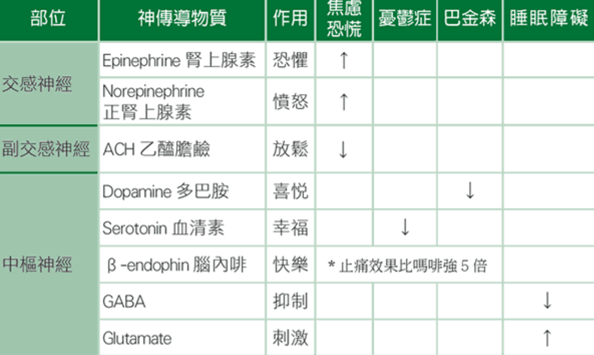
- comparison
- 多巴胺跟預期有關
- 腦內啡止痛
- 血清素 開心
- 大腦結構
- ==考==
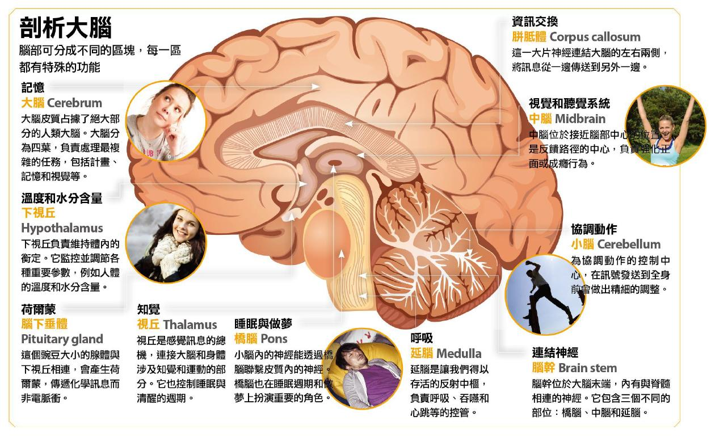
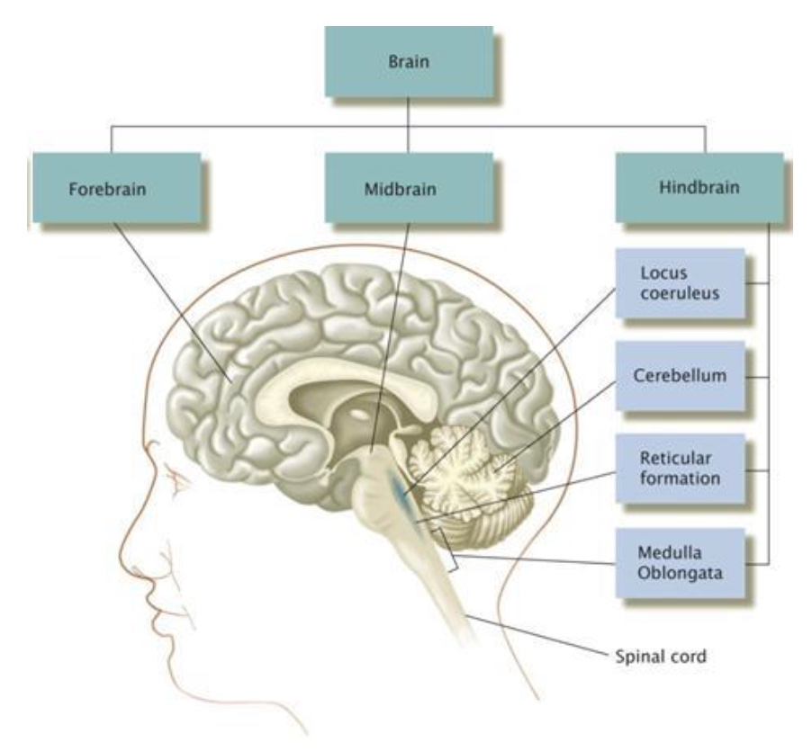
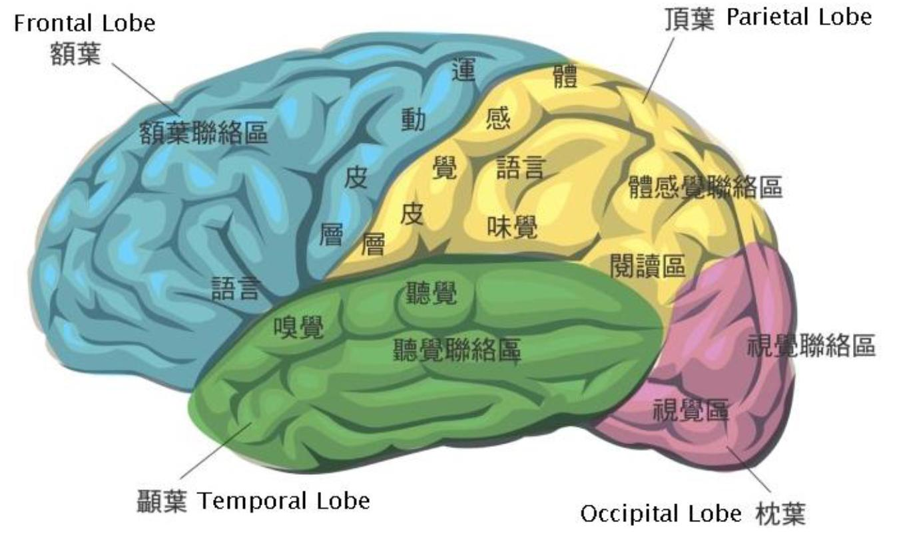
- 左右腦
- 左腦
- sequential processing
- 右腦
- parallel processing
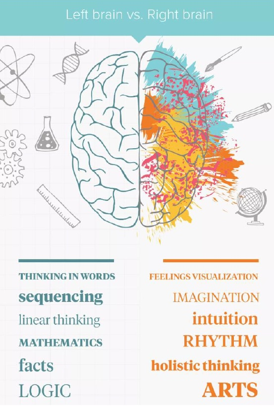
- 左腦
- nature & nurture
- twins' IQ
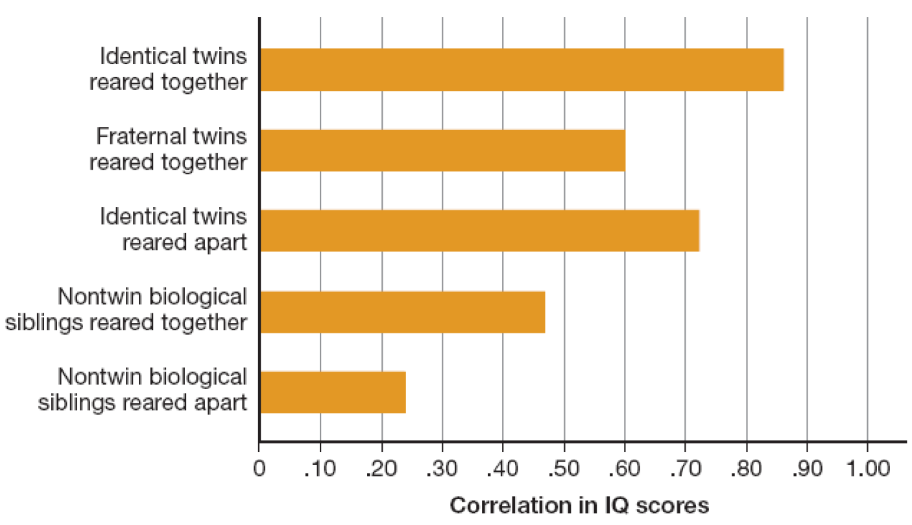
- children's performance vs. mother's responsiveness
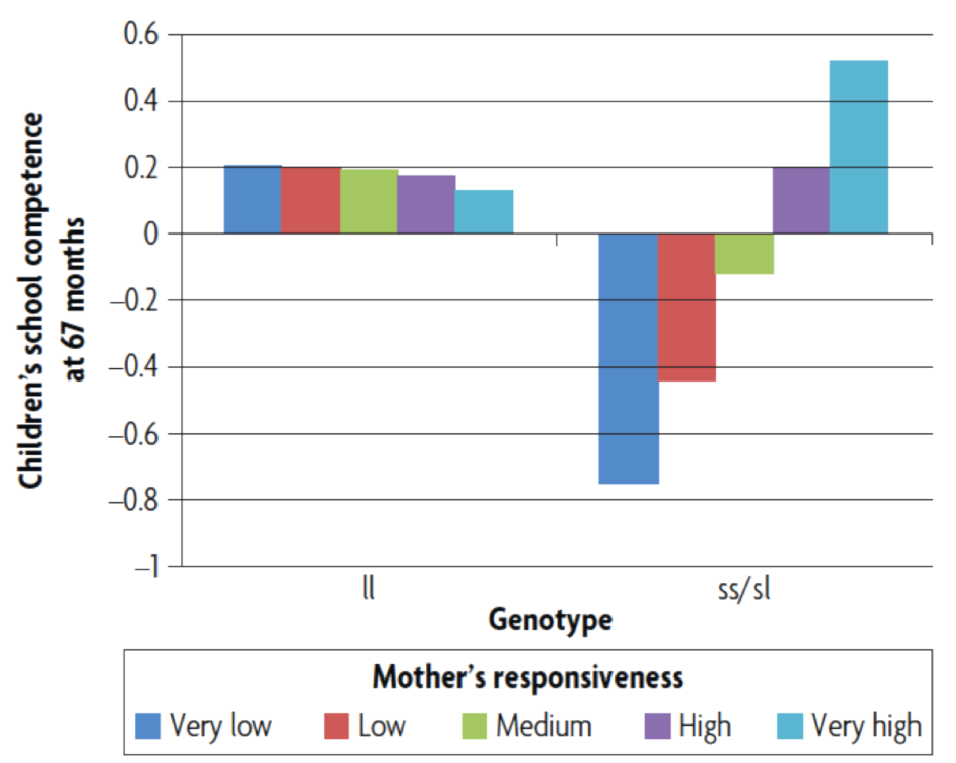
- 對於某一種基因型，mother's responsiveness 沒什麼影響，對於另一種基因型，則是影響非常大
- 表關遺傳學 epigenetics
- 環境引發遺傳性的基因
- twins' IQ
感覺與知覺¶
- bottom-up processing
- 慢想
- top-down processing
- 經驗
- 快思
- Weber-Fechner Law
- marginal product 遞減
- 感覺 = kln(刺激)
- Stevens' Power Law
- more general than Weber-Fechner Law
- 感覺 = k(刺激)^a, a<1
- 知覺褪色 perceptual fading
- 一直盯著同一點，視野其他地方都會不見
- 有用 VR 實驗過，會 eye-tracking 主動抵銷掉眼睛的動，讓視野完全不動，結果沒多久視野就全灰了
- 一直盯著同一點，視野其他地方都會不見
- 完形定律
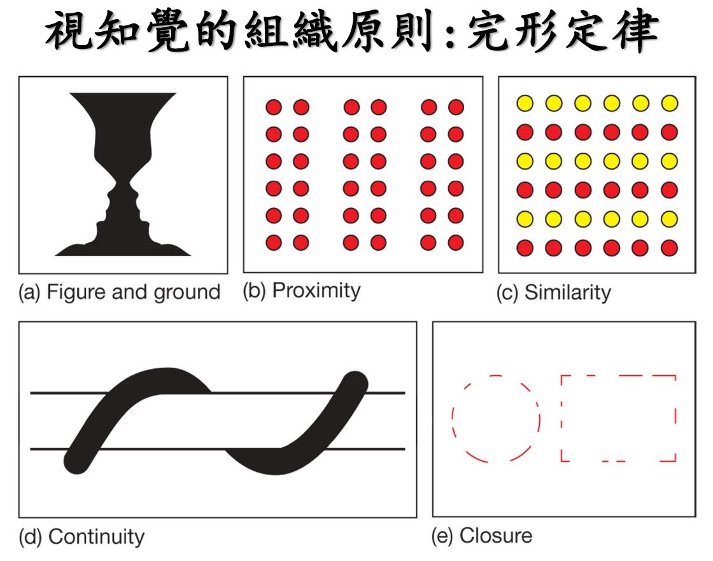
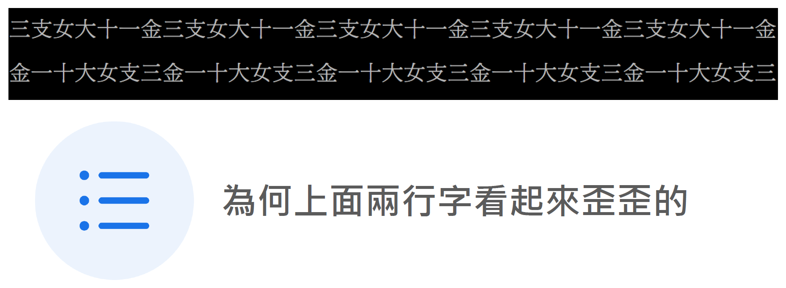
因為連續性
- neon color spreading
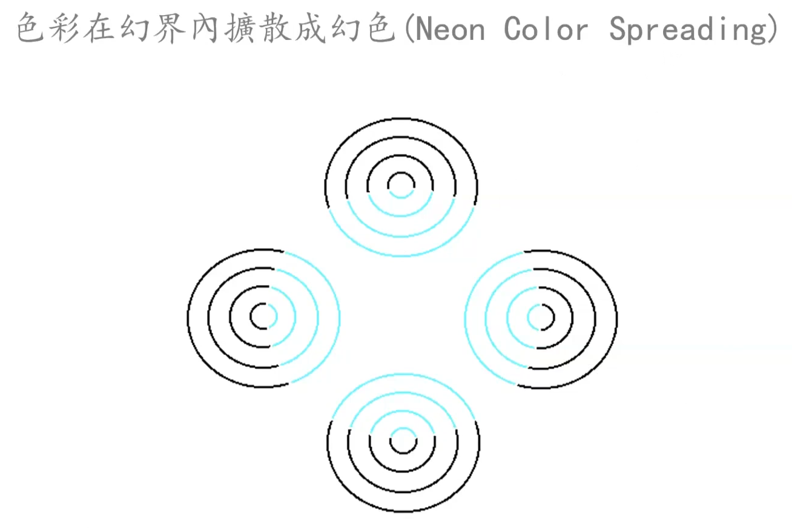
- 連續性包起來 → 顏色擴散到裡面
- 處理外白中黑的神經元較多
- what vs. where
- 處理 where 比較強
- 在動的時候就看不出顏色也在變
- https://www.youtube.com/watch?v=IjMVsTFVX10
- 周遭在動黃色就不見了
- https://www.youtube.com/watch?v=4Aye9FWgxUg
- 在動的時候就看不出顏色也在變
- 處理 where 比較強
注意與意識¶
- 體型愈小，睡眠時間愈多
- 睡眠周期
- NREM
- stage 1
- stage 2
- stage 3/4
- REM
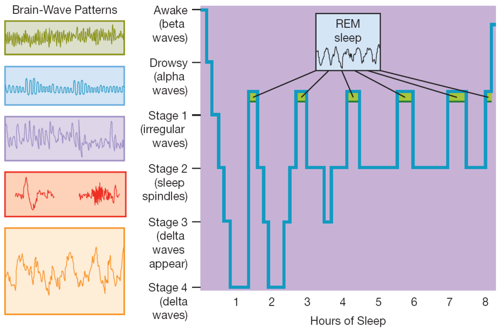
- 會慢慢進入深層睡眠 bc 怕環境有狀況
- NREM 變 REM 是非常快入的 bc 瞬間回復可以應對外在狀況的情況
- 剝奪 REM，補眠時是補 REM；剝奪 NREM，補眠時是補 NREM
- NREM
- lucid dream
- 前額葉沒完全關閉
- 通靈者通靈時會進入睡覺的那種腦波狀態
- 老師自己抓來測的
- 催眠
- state theory
- 被催眠時產生另一個分離的 state
- non-state
- 被催眠時假戲真做
- state theory
- caffeine 長得跟 adenosine 很像 → 卡住作用位置，生產出來的 adenosine 無法作用，就在那邊飄，人因此不會想睡 → caffeine 代謝掉後，在那邊飄的一堆 adenosine 終於發生作用，加深睡意
- adenosine: 會讓人想睡
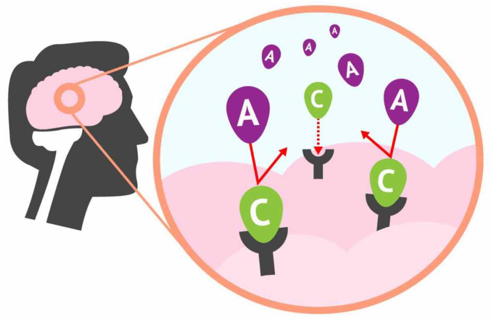
- 心理作用藥
- 抑制劑
- 酒精
- 抑制理性
- 酒精
- 興奮劑
- caffeine
- 幻覺劑
- 大麻
- LSD
- 抑制劑
- perceptual awareness
- perceptually unaware
- blindsight
- 無視覺但可以繞過障礙
- 上丘
- 無意識的視覺區
- subthreshold stimuli
- 刺激太弱沒感覺
- alias subconsious / subliminal stimuli
- e.g. 影片偷偷塞幾個 frame
- inattentional blindness
- 刺激夠強但沒注意到
- 數傳球猩猩影片
- 魔術
- change blindness
- 有注意到但沒看到
- blindsight
- perceptually unaware
- mindfulness
- 活在當下
- 一日三省吾身
學習¶
- 制約（考）
- 古典制約
- 操作制約
- CS：conditioned stimulus
- 制約後才是刺激
- 鈴聲
- CR：conditioned response
- 制約後，聽到鈴聲 → 流口水
- US：unconditioned stimulus
- 先天的刺激
- 食物
- UR：unconditioned response
- 看到食物 → 流口水
- 真的不是制約結果嗎
- 看到食物 → 流口水
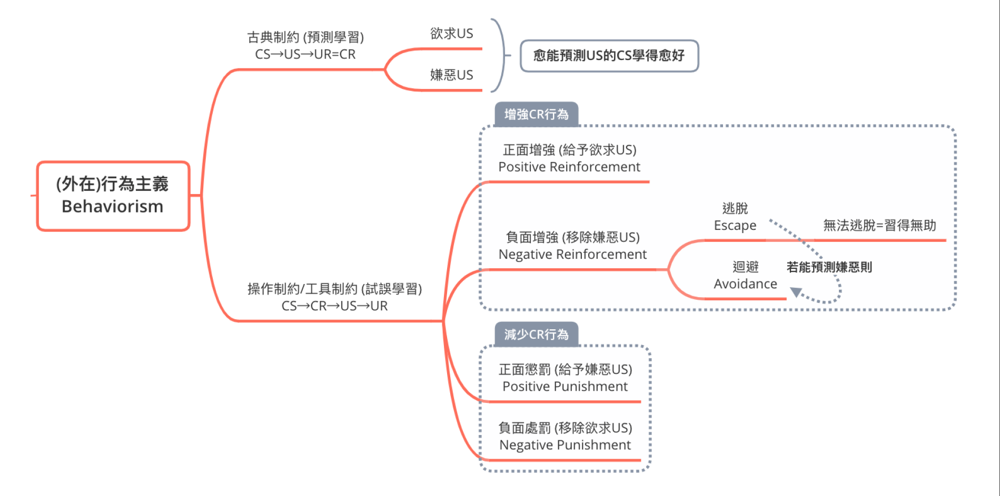
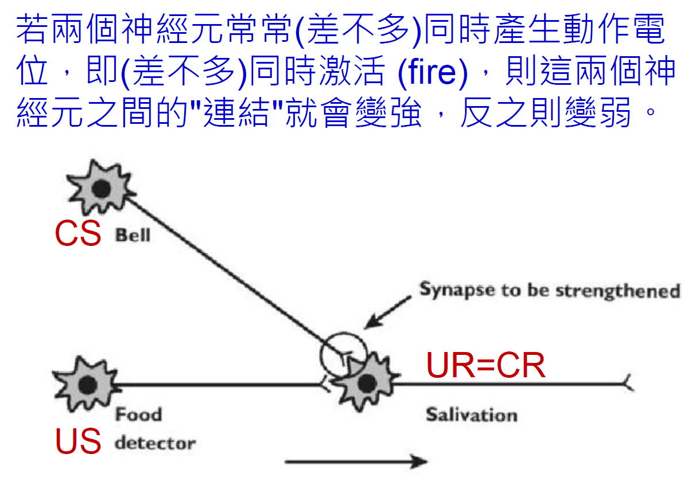
- US 不再隨著 CS 而來 → 制約逐漸削弱
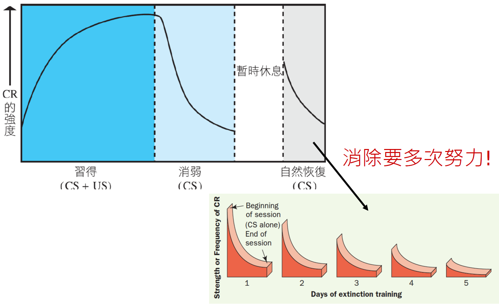
- 有因果關係的制約最有效
- CS → US > CS = US > US → CS
- generalization
- 一朝被蛇咬，十年怕草繩
- discrimination
- 對常看到的種族臉孔辨別度較高，對其他則不敏感
- reward schedule
- variable ratio 最會讓人上癮
- variable 的 reward → 大 response
- e.g.
- 賭博
- social media
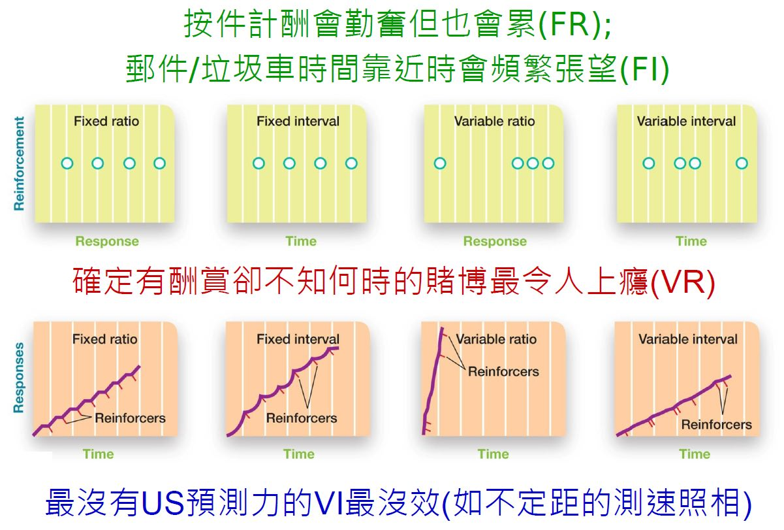
- variable ratio 最會讓人上癮
- 會學別人，制約自己
記憶¶
- 視覺記憶 capacity 大 but decay fast
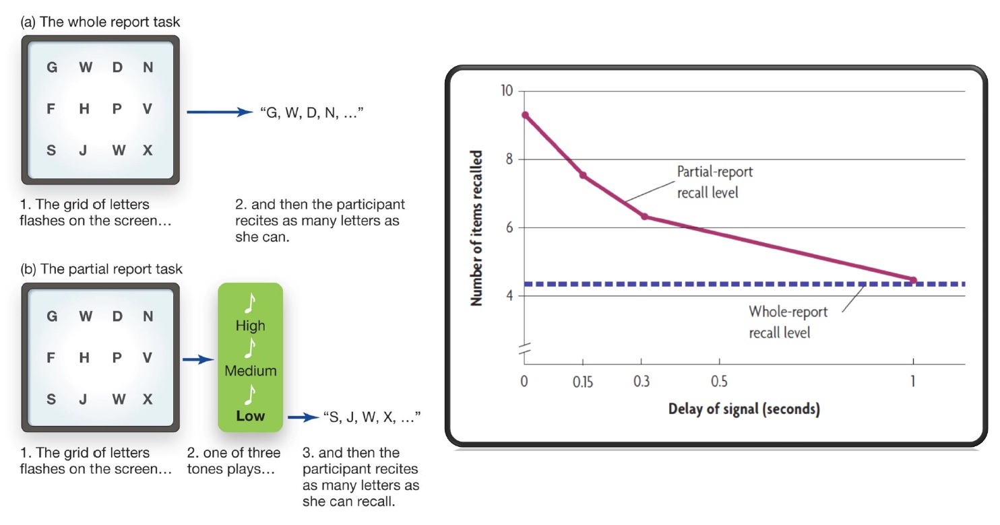
- partial report: 一樣先看所有字母一秒，根據聽到的去寫下對應的一行 → 記得比較清楚，表示視覺記憶 capacity 是大的
- 超憶者抽象思考能力較弱
- 只注意到細微的差異處，而非背後的 concept（這種感覺）
- arousal: capacity
- 注意: selection
- 長期記憶
- primary effect
- 最前面的東西記得較清楚
- 因為前面的東西回憶較多次
- primary effect
- working memory
- 儲存記憶並做 manipulation
- 短期記憶
- recency effect
- 最近的東西記得較清楚
- decay 較少
- recency effect
- 語音迴路
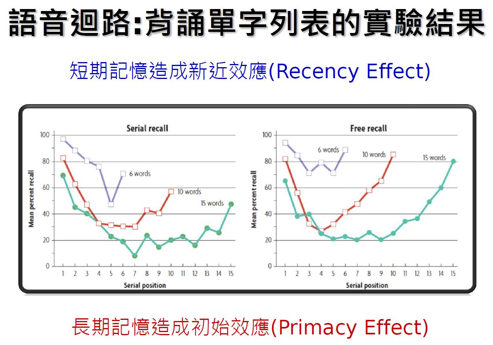
- primary & recency effect
- interference
- 順向干擾 proactive interference
- 前面學的東西干擾後面學的東西
- 逆向干擾 retroactive interference
- 後面學的東西干擾前面學的東西
- 雙語環境的小孩學語言較慢
- 思考較有彈性
- 順向干擾 proactive interference
- 深度學習 deep learning
- 內化
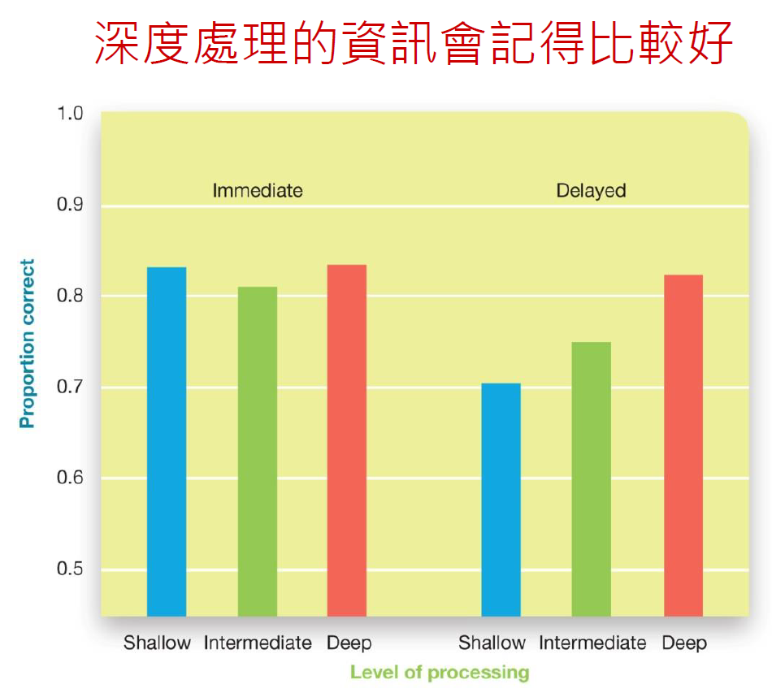
- false memory
- 你對於各個人事物的知識有連結，據此創造假意義
- 可能發生於 encoding or retrieval
- e.g. 命案該有刀 → 問目擊者有沒有刀，會回答有刀，however 其實沒有刀
- 被 leading question 暗示
- 小孩很容易接受暗示，亂回答
- so 各種問卷式量表問題很多
- 你對於各個人事物的知識有連結，據此創造假意義
- 海馬迴
- 移除海馬迴，舊記憶還在，but 新記憶 no
- 參與記憶的形成
認知¶
- 前額葉皺褶 for 增加表面積
- 語言
- bottom-up
- 理解句子
- e.g. 看電視
- top-down
- 產生句子
- e.g. 閱讀
- 閱讀時，是跳著看的
- 中英文涉及的腦區差不多
- bottom-up
- 捷思法 heuristics
- think outside the box
- 適合處理結構不清的問題
動機與情緒¶
- 動機滿足 → 正向情緒
- 動機被阻礙 → 負向情緒
- 情緒強度 = 動機強度 x 超出預期程度
壓力¶
- 壓力來源
- 不可預測性
- e.g. 地震
- 不可控制性
- e.g. 電磁學不會
- 我不要
- e.g. 死
- 不可預測性
- 減少壓力
- 增加可預測性
- 爬到更高位
- 增加可控制性
- 爬到更高位
- 信宗教
- 有 karma 得永生
- 增加可預測性